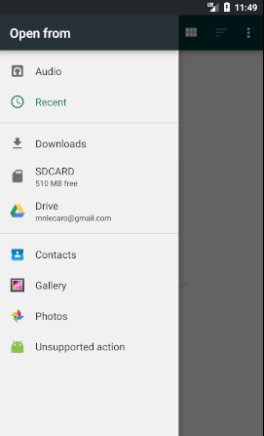

App¶
Descargar Mapa¶
Esta opción permite seleccionar una región geográfica, descargarla para poder usarla en el registro de pasos en una expedición
{kind=link}
Puedes acercarte o alejarte por medio de los botones o tocando la pantalla, una vez seleccionada el área, presionar el botón de descarga.
Acto seguido se almacenará un archivo geojson
Cargar Archivo de Puntos¶
Puedes almacenar archivos del tipo geojson que representen expediciones y poder visualizarlas
{kind=link}
Los archivos que se cargan al mapa son de formato .json
Georefenciar¶
Esta opción permite la captura de la trayectoria durante la expedición, el cuál por defecto está en distancia de 1mt para la toma de marcas
Dando clic acto seguido aparecerán las opciones de captura de datos
Modos de captura de datos
La captura de datos se realiza por tiempo y por distancia
{kind=link}
Selección entre tipos de marcado¶
Al tomar cada una de las opciones aparecerán los rangos a escoger disponibles
Selección por distancias¶ |
Selección por tiempo¶ |
{kind=link}
{kind=link}
Ajustes¶
En esta opción puede seleccionar el tipo de Geolocalización a usar: RTK (conectándo a piksi) o GPS
{kind=link}
Ajustes¶
Enviar¶
Aquí se pueden enviar archivos de puntos (la ruta en un archivo .json) de la jornada por el correo electrónico disponible en el dispositivo (de preferencia Gmail).
{kind=link}
{kind=link}
{kind=link}